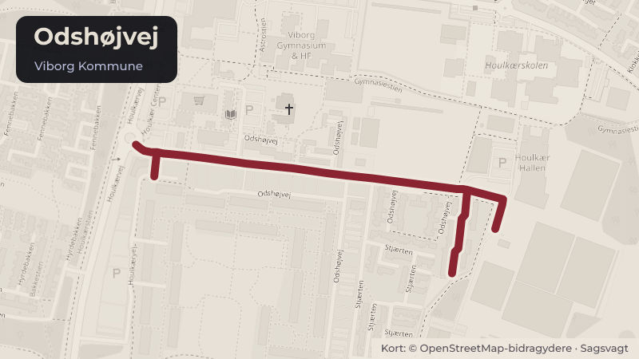

Besluttet 2. september, Byrådet, Viborg
Houlkær Helhedsplan etape 2, frigivelse til realisering (bevillingssag)
Byrådet har i budgettet afsat midler til realisering af helhedsplan for bydelscenteret i Houlkær samt stier langs Odshøjvej. I sagen foreslås det, at Teknisk Udvalg godkender frigivelse af rådighedsbeløbet til henholdsvis realisering af stierne i 2026 og udførelse af etape 2 i 2027.
Bydele i sagen: Houlkær
Steder i sagen: Odshøjvej

Kort fortalt
- Forslaget
- Anlægsudgiftsbevillingen til kontoen ”Helhedsplan – Houlkær centerområde”
- Udgiften på 5.706.000 kr. finansieres af det afsatte rådighedsbeløb på kontoen
- Hvem
- Byrådet, Viborg Kommune
- Hvornår
- Onsdag 2. september 2026
- Status
- Besluttet. Indstillingen fra Teknisk Udvalg godkendes. Stine Damborg.
Læs hele sagen Kommunens egen tekst
Indstilling
Direktøren for Teknik & Miljø foreslår, at Teknisk Udvalg indstiller til byrådet,
1. at anlægsudgiftsbevillingen til kontoen ”Helhedsplan – Houlkær centerområde”
forhøjes med 5.706.000 kr. med rådighedsbeløb på 2.600.000 kr. i 2026 og 3.106.000 kr.
2. at udgiften på 5.706.000 kr. finansieres af det afsatte rådighedsbeløb på kontoen
”Helhedsplan – Houlkær centerområde” med 5.706.000 kr. i 2027.
Behandling i Teknisk Udvalg 12. august 2026
Teknisk Udvalg indstiller til byrådet,
1. at anlægsudgiftsbevillingen til kontoen ”Helhedsplan – Houlkær centerområde”
forhøjes med 5.706.000 kr. med rådighedsbeløb på 2.600.000 kr. i 2026 og 3.106.000 kr.
2. at udgiften på 5.706.000 kr. finansieres af det afsatte rådighedsbeløb på kontoen
”Helhedsplan – Houlkær centerområde” med 5.706.000 kr. i 2027.
Behandling i Økonomi- og Erhvervsudvalget 26. august 2026
Økonomi- og Erhvervsudvalget anbefaler indstillingen fra Teknisk Udvalg.
Fraværende:
Lone Langballe
Stine Damborg
Sagsfremstilling
Historik
Byrådet besluttede på møde i maj 2023 (link til sag nr. 12 på byrådets møde den 31. maj 2023 )
at udarbejde forslag til en helhedsplan for centerområdet i Houlkær og bevilge 300.000 kr.
hertil.
Teknisk Udvalg godkendte i februar 2024 (link til sag nr. 10 på Teknisk Udvalgs møde den 28.
februar 2024) at fremlægge et forslag til helhedsplan i offentlig høring.
Byrådet vedtog på møde i august 2024 endeligt Helhedsplan Houlkær (link til sag nr. 7 på
byrådets møde den 28. august 2024).
Byrådet besluttede på møde den 18. december 2024 (link til sag nr. 15 i byrådet den 18.
december 2024), at bevilge midler til realisering af projekter i Houlkær Helhedsplan etape 1.
Inddragelse og høring
Helhedsplanen er udarbejdet i dialog med en følgegruppe af lokale repræsentanter.
Følgegruppen inddrages i den videre proces med projektering og planlægning af
anlægsprojektet for etape 2.
Beskrivelse
Helhedsplanen er en samlet plan for udviklingen af centerområdet i Houlkær, som sætter
retning, skaber fælles forståelse og sikrer sammenhæng i de fremtidige projekter. Planen tager
udgangspunkt i områdets kvaliteter og potentialer og har fokus på en helhedsorienteret
byudvikling.
Oversigtskort er i bilag 1.
’Helhedsplan Houlkær’ er i bilag 2.
Helhedsplanen består af fire dele: en introduktion til bydelen, overordnede hovedgreb, konkrete
delprojekter samt et afsnit om realisering. På baggrund af analysen er der peget på fem
centrale greb, som styrker udviklingen af Houlkær centerområde og udfoldes gennem en
række delprojekter.
I 2025 og 2026 er Houlkær Helhedsplan etape 1 blevet realiseret. Med afslutningen af denne
etape opstarter planlægning af etape 2, som bl.a. omfatter ”Hjertet” - arealet mellem Viborg
Gymnasium og Viborg Media College. Sammen med etape 2 skal der etableres stier langs
Odshøjvej for at højne trafiksikkerheden for cyklister til og fra Houlkærskolen.
Da stierne vil højne trafiksikkerheden på strækningen, foreslår forvaltningen, at etableringen af
disse prioriteres. Ved frigivelse af bevilling til dette delprojekt, vil det være muligt at
færdigetablere stierne i 2026.
Oversigtskort stier Odshøjvej er i bilag 3.
Alternativer
Intet.
Tidsperspektiv
Stierne langs Odshøjvej kan projekteres og etableres i 2026. Helhedsplanens etape 2
projekteres i 2026 med overskydende økonomi fra etape 1 og udføres forventeligt fra foråret
Økonomiske forhold og konsekvenser
Der er i 2027 afsat 5.706.000 kr. til realisering af Houlkær Helhedsplan, etape 2 samt
etablering af stier langs Odshøjvej.
Efter bevillingen vil budgettet på kontoen ”Helhedsplan - Houlkær Centerområde” være
følgende:
Stier langs Odshøjvej
Færdiggørelse af etape 1 samt projektering etape 2 – beløbet er
tidligere frigivet
Helhedsplan etape 2
Juridiske og planmæssige forhold
Intet
Beslutning
Indstillingen fra Teknisk Udvalg godkendes.
Fraværende:
Stine Damborg
Kilde: Viborg Kommune, Byrådet, referat fra mødet onsdag 2. september 2026, punkt 7. Læs den originale sag hos kommunen.